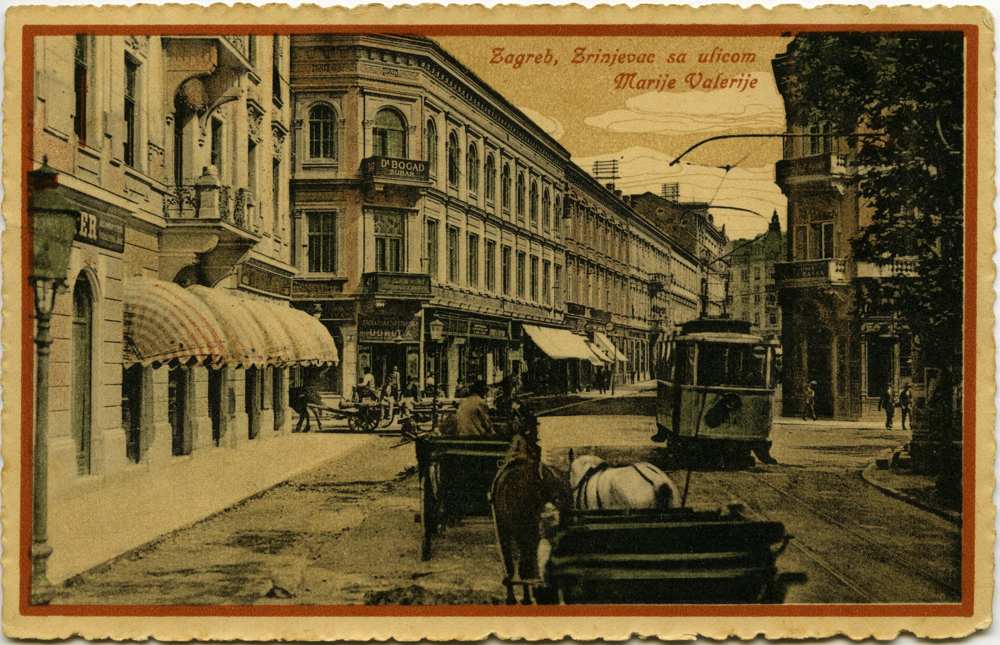
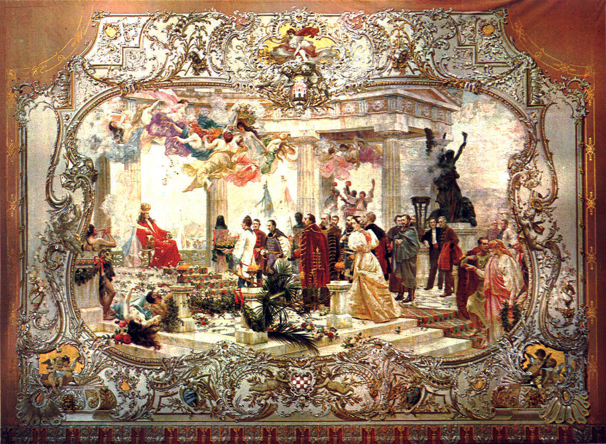
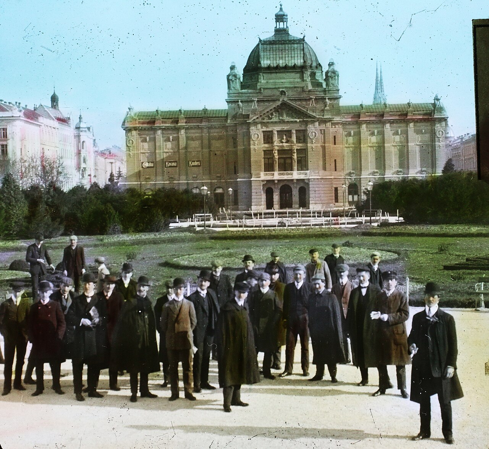
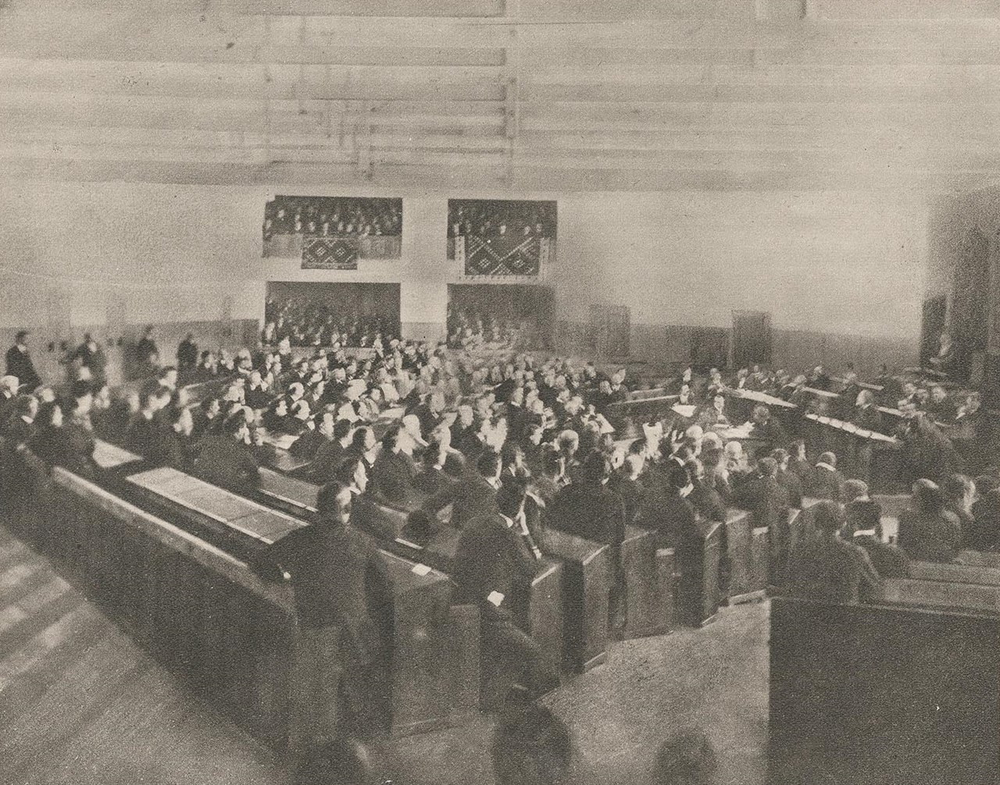
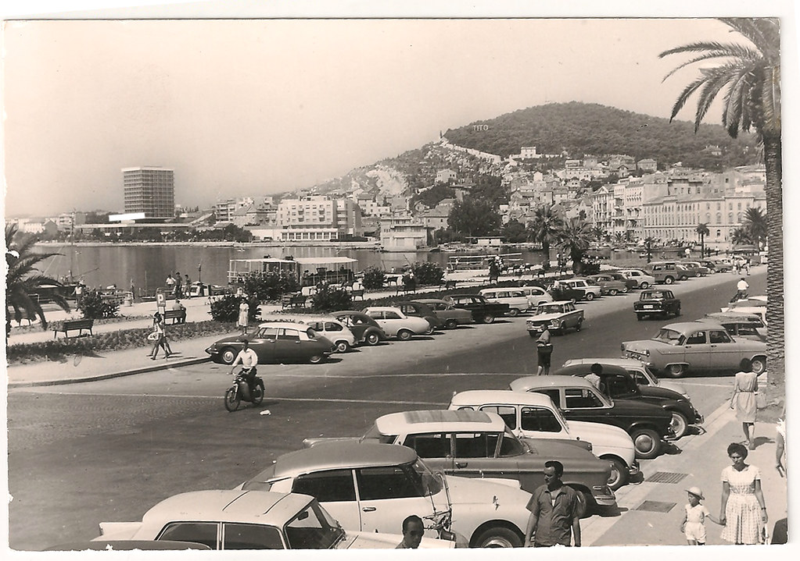
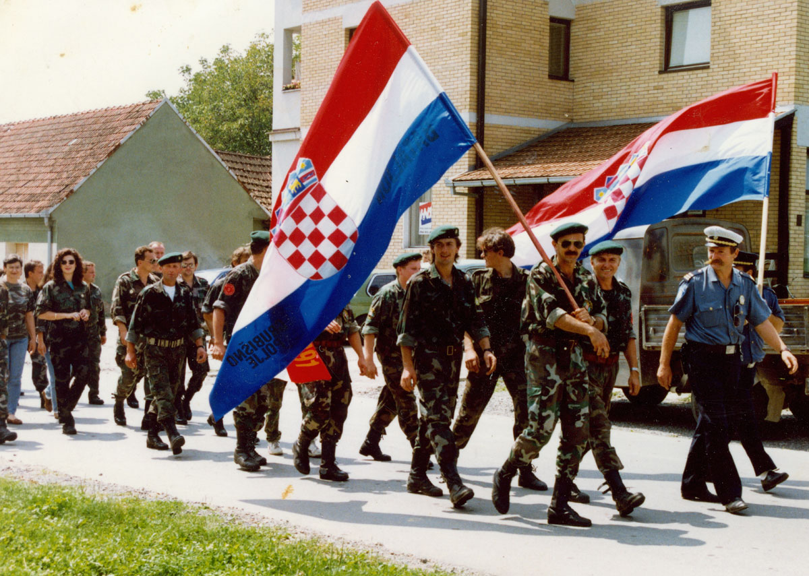
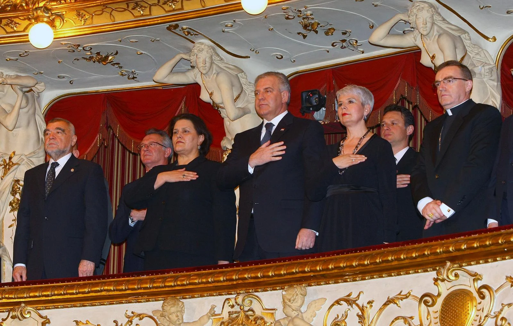

Otkrijte fascinantnu povijest Hrvatske - od Ilirskog pokreta do članstva u Europskoj uniji. Kroz interaktivnu kartu i detaljne priče upoznajte ključne trenutke koji su oblikovali današnju Hrvatsku.

Zagreb - prijestolnica kroz stoljeća
Moderna povijest Hrvatske počinje krajem 18. stoljeća, u vrijeme kada je hrvatski narod počeo intenzivnije raditi na očuvanju svog nacionalnog identiteta, jezika i kulture. Ovaj period obilježen je brojnim političkim, društvenim i kulturnim promjenama koje su oblikovale suvremenu Hrvatsku.
Važno: Hrvatska ima dugu povijest kao neovisna država još od srednjeg vijeka, kada je postojala Kraljevina Hrvatska u personalnoj uniji s Ugarskom (1102.), a kasnije i kao dio Habsburške Monarhije (1527.-1918.).
Hrvatska se nalazi u jugoistočnoj Europi, na Balkanskom poluotoku. Graniči sa Slovenijom i Mađarskom na sjeveru, Srbijom na istoku, Bosnom i Hercegovinom i Crnom Gorom na jugoistoku, te Italijom preko Jadranskog mora na zapadu. Površina iznosi 56.594 km², a broj stanovnika oko 4 milijuna.

više informacijaHrvatsko narodno kazalište u Zagrebu
Ilirski pokret bio je kulturni i politički pokret u Hrvatskoj čiji je cilj bio buđenje nacionalne svijesti i kulturno ujedinjenje južnih Slavena. Ime je dobio prema ilirskim plemenima koja su nekada nastanjivala Balkanski poluotok.
Ljudevit Gaj objavljuje "Kratku osnovu hrvatskoga pravopisanja" - temelj standardizacije hrvatskog jezika
Osnovane Ilirske novine, prvi politički list na hrvatskom jeziku
Osnovano Društvo prijatelja naroda hrvatskoga
Hrvatski je proglašen službenim jezikom u Hrvatskom saboru
Ilirski pokret prerasta u revolucionarne događaje
Najpoznatiji predstavnik Ilirskog pokreta, poznat kao "otac hrvatskog preporoda". Napisao je "Kratku osnovu" i uređivao Ilirske novine.
Hrvatski pjesnik i jedan od vođa pokreta. Napisao je zbirku "Pjesničke stvari" i bio prvi pjesnik koji je pisao isključivo na hrvatskom jeziku.
Povjesničar i političar koji je predložio da se hrvatski uvede u škole i sudove.

više informacijaZagreb - Art Paviljon iz vremena Austro-Ugarske
Dualizam: Austro-Ugarska je bila dualna monarhija s dva jednaka dijela - austrijskim i ugarskim. Hrvatska je bila pod ugarskim dijelom.
Austro-ugarska nagodba - nastanak dualne monarhije
Hrvatsko-ugarska nagodba - definirani odnosi Hrvatske i Ugarske
Osnovana Hrvatska stranka prava pod vodstvom Ante Starčevića
Početak Prvog svjetskog rata - atentat u Sarajevu
Osnovana 1894. godine pod vodstvom Ante Starčevića, poznatog kao "Oca domovine". Stranka je zagovarala potpunu neovisnost Hrvatske.
Osnovana 1904. godine pod vodstvom Stjepana Radića. Zalagala se za prava seljaka i demokratizaciju političkog sustava.

više informacijaUstavotvorna skupština kraljevine SHS
Važno: Ovo razdoblje bilo je obilježeno velikim političkim previranjima, centralizmom iz Beograda i nezadovoljstvom hrvatskog naroda.
Proglašenje Države Slovenaca, Hrvata i Srba u Zagrebu
Ujedinjenje sa Srbijom - nastanak Kraljevstva SHS
Usvojen Vidovdanski ustav - centralistički uređena država
Atentat na Stjepana Radića u Skupštini
Sporazum Cvetković-Maček - autonomija za Hrvatsku

više informacijaDubrovnik pod zaštitom UNESCO-a
Samoupravljanje: Jugoslavija je razvila jedinstveni model "samoupravnog socijalizma" koji se razlikovao od sovjetskog modela.
Osnovana Socijalistička Federativna Republika Jugoslavija (SFRJ)
Raskid sa Sovjetskim Savezom
Hrvatsko proljeće - nacionalni pokret za veću autonomiju
Umro je Drug Tito
Hrvatsko proljeće, poznato i kao "Maspok", bio je demokratski pokret za veću autonomiju Hrvatske. Pokret je predvođen hrvatskim intelektualcima i studentima, a zahtijevao je veću kulturnu i političku samostalnost.

prikaz domovinskog rata
Domovinski rat: Hrvatski branitelji su u ovom ratu pokazali iznimnu hrabrost. Rat je trajao četiri godine i rezultirao hrvatskom pobjedom.
Prvi višestranački izbori - pobjeđuje HDZ pod vodstvom Franje Tuđmana
25. lipnja - Sabor proglašava neovisnost Hrvatske
Bitka za Vukovar - simbol hrvatskog otpora
Operacija Oluja - oslobođenje cijele Krajine
Završetak mirne reintegracije Podunavlja

Hrvatski ulazak u NATO savez
Članstvo u EU: Hrvatska je 1. srpnja 2013. postala punopravna članica Europske unije. Od 2023. članica je i schengenskog prostora, a koristi euro.
Ulazak u NATO savez
Ulazak u Europsku uniju
Uvođenje eura kao službene valute
Ulazak u schengenski prostor
Hrvatska je jedna od najpopularnijih turističkih destinacija u Europi, poznata po svojoj obali, nacionalnim parkovima (Plitvice, Krka, Kornati), kulturnoj baštini i mediteranskom ozračju. Godišnje Hrvatsku posjeti preko 17 milijuna turista.